Smart Me
Kick-off, Aug 30, 2023
Tijdens de kick-off van de minor smart industry hebben we als klas en betrokken docenten kennisgemaakt met elkaar. Voor de start van de minor heeft iedere student een welkomstbrief ontvangen met daarin een persoonlijke opdracht. Tijdens de kick-off zijn we met de uitkomsten hiervan aan de slag gaan. Ik zat in een groepje met Sander en Lea om de individuele uitkomsten met elkaar te bespreken, samen te voegen en te pitchen. Het resultaat is te zien in onderstaande foto’s.
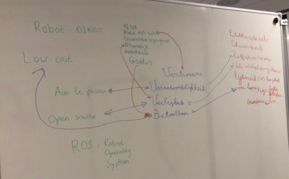
Daarnaast hebben we kennisgemaakt met het continuous assessment en de bijbehorende criteria om de minor met goed gevolg af te ronden (zie foto's hieronder). Tijdens de kick-of heb ik aangegeven dat ik al gewerkt heb aan het tonen van initiatief/betrokkenheid en disciplines verkennen buiten mijn vakgebied.
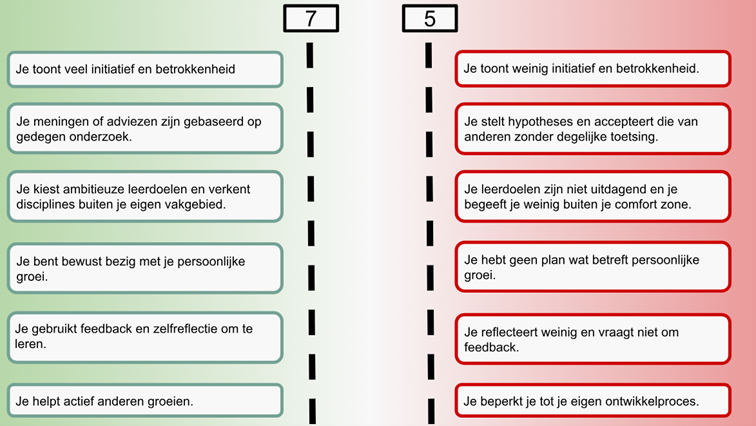 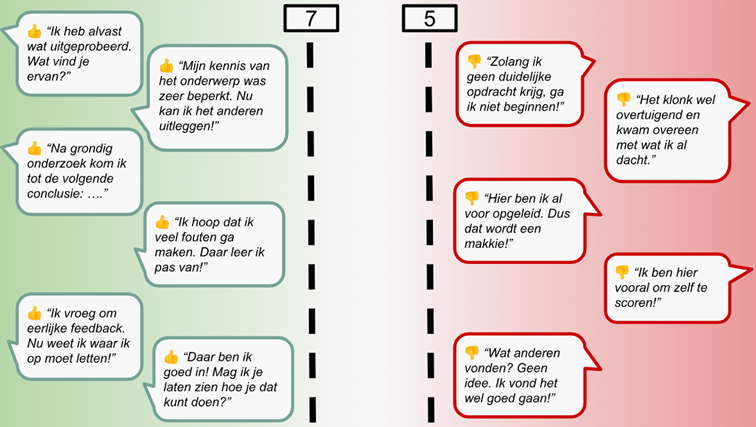(Kook)workshop 1, Sept 13, 2023
Vooraf had ik voor mijzelf bedacht dat ik voornamelijk mijn klasgenoten beter wilde leren kennen, vooral ook met het ook op de groepjes die gemaakt moeten worden. De middag vond ik zelf heel leuk en ik heb er ook bewust voor gekozen om niet met Lea in een groepje te gaan, zodat ik andere klasgenoten, Iris, Tom, Tijn, Frank en Ezra, beter zou leren kennen. Wat mij betreft verliep de samenwerking, besluitvorming en communicatie in ons team heel goed. Iedereen was ook zeer tevreden met het eindresultaat (zie foto’s).
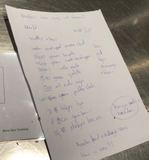 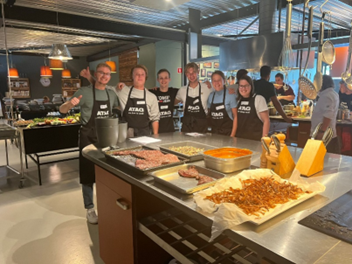 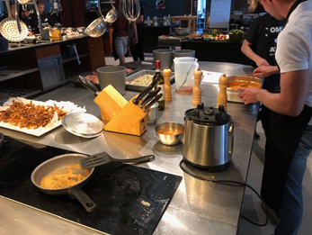 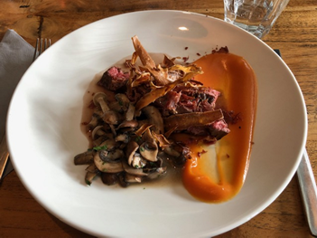Mariëlle gaf aan tijdens het kookcollege dat dat misschien wel een leerpunt voor mij is, om niet te bescheiden te zijn en gewoon hulp te vragen als ik het nodig heb, niet te lang afwachten. Dit herken ik zeker en wil ik ook graag verbeteren, maar doordat ik onzeker ben, is dit wel heel lastig voor mij. Eerlijk gezegd voel ik mij ook niet helemaal thuis in de groep, omdat er een aantal zijn waarbij ik mijzelf niet op mijn gemak voel. Tijdens het kookcollege bijvoorbeeld luisterden zij ook helemaal niet naar de opdracht van Marcel, wat ik erg vervelend vond. Gelukkig was Marcel daar aan het einde ook duidelijk over, je hebt zelf gekozen voor deze minor en dan mag je ervan uitgaan dat je er gemotiveerd voor bent, als je je fatsoen niet kan houden, dan moet je ook besluit maken om niet door de deur te stappen.
Workshop 2, Sept 20, 2023
Tijdens deze workshop hebben we gereflecteerd op de competenties:
| Competentie | Schaal 1-10 | Toelichting |
|---|---|---|
| 1. Ik neem veel initiatief en ik toon betrokkenheid. | 7 | Ik toon betrokkenheid, door altijd op tijd aanwezig te zijn en goed te luisteren. Initiatief tonen kan ik verbeteren. Bij het maken van de groepjes zijn er ’s avonds in het gedeelde Teams bestand wijzigingen aangebracht, waardoor ik niet bij mijn top drie keuzes meer ingedeeld was. Ik heb toen meteen initiatief getoond door een opmerking te plaatsen in het Teams bestand om te laten weten dat ik het hiermee niet mee eens was en een appje in de groepsapp gestuurd. Over het algemeen ben ik mindersterk in het nemen van veel initiatief, omdat ik meer introvert ben dan extravert. Ik kijk het liefst de kat uit de boom. Van mijzelf hoef ik deze karaktereigenschap niet te veranderen, want ik kan hierdoor juist weer mijzelf heel goed inleven in anderen, goed luisteren en analyseren bijvoorbeeld. |
| 2. Ik doe eerst onderzoek voordat ik mijn mening geef of adviseer. | 8 | Voordat ik iets zeg/doe denk ik goed na en doe ik eerst onderzoek. Van nature ben ik geneigd om eerst de boeken in te gaan en het te onderzoeken. Bij de kookworkshop heb ik ook eerst samen met het groepje op het internet recepten, ingrediënten opgezocht en een plan opgesteld om vervolgens aan de slag te gaan. |
| 3. Ik kies ambitieuze leerdoelen en verken disciplines buiten mijn eigen vakgebied. | 7 | Ik verken tijdens deze minor disciplines buiten mijn eigen vakgebied (food & business). In de eerste weken heb ik kennisgemaakt en gewerkt met Arduino en programmeren. Ik kies daardoor ook ambitieuze leerdoelen, omdat ik bij alle workshops nieuwe dingen leer. |
| 4. Ik ben bewust bezig met mijn persoonlijke groei. | 8 | Vanaf week 1 heb ik meteen een logboek bijgehouden om mijn persoonlijke groei bij te houden en ben daar dus echt bewust mee bezig. |
| 5. Ik gebruik feedback (geven & vragen) en zelfreflectie om te leren. | 6 | Ik reflecteer wel op de competenties, in mijn logboek, maar ik vraag niet om en geef geen persoonlijke feedback aan mijn klasgenoten (of docenten). Ik vraag wel feedback over gemaakte opdrachten aan docenten. |
| 6. Ik help actief anderen groeien. | 6 | Ik vind deze competentie lastig, omdat ik tot nu toe vooral hulp nodig heb bij Arduino en programmeren. Omdat ik zelf hier bijna geen voorkennis van heb, is het lastig om anderen te helpen. Bij de kookworkshop kon ik deze competentie gelukkig wel toepassen. |
Vervolgens kregen we van Mariëlle en Pieter te horen wat zij hebben waargenomen in de groep. Hieronder heb ik de waarnemingen kort genoteerd:
- Serieus mee bezig (bijv. reflectie) en professioneel (afmelden, aanwezigheid);
- Elkaar helpen, niet te veel van ons verwachten. Teambuilding kan beter;
- Staan open voor elkaar;
- Balans zoeken tussen voor jezelf opkomen en voor de groep opkomen; De ene keer moet je iets nemen en de andere keer iets geven;
Daarna hebben we ook nog gereflecteerd op het kookcollege a.h.v. STARR+-
- Situatie: in team van 5 (Tom, Tijn, Iris, Frank en ik) één gerecht koken voor 25 personen in 1,5 uur
- Taak: ik had de taak om de champignons te snijden en klaar te maken om te bakken en ik ben verantwoordelijk geweest voor het maken van de saus bij ons gerecht.
- Actie: ik heb uitgelegd hoe je zoete aardappel puree kan maken, heb aan Marcel gevraagd hoe ik de saus het best in kon dikken en toen heeft Marcel uitgelegd hoe ik dat het beste kon doen met aardappelzetmeel. Hij vroeg of hij moest helpen of dat het zelf ging lukken en ik heb ervoor gekozen om er zelf mee aan de slag te gaan. Ik heb bij het opmaken van de borden ervoor gezorgd dat de borden die zonder varkensvlees geserveerd moesten worden, ook echt apart gehouden werden.
- Resultaat: het gerecht is gemaakt, het was niet op tijd, omdat de groepjes voor ons uitliepen op de tijd, er waren alleen echt restproducten over, want zelf van de schillen van de zoete aardappel hebben wij chips gemaakt in het kader van de ‘geen voedselverspilling week’ bij de kookstudio.
- Reflectie: + gerecht is succesvol gemaakt en geserveerd met team; + duidelijk plan opgesteld met het team; + goede samenwerking; - gerecht niet heel duidelijk uitgelegd aan de tafels.
Ook heb ik uiteindelijk de volgende concrete leerdoelen opgesteld (bijgeschaafd na tussentijdse pitstop):
- Voor 12 januari heb ik een bakje voor het plantbewateringssysteem ontworpen in SolidWorks en daadwerkelijk ge-3D-print.
- Voor 12 januari heb ik een website zelf kunnen programmeren met HTML, CSS en Javascript waarin ik het geleerde uit de workshops toepas en waar mijn portfolio op staat.
- Van 30 augustus tot 12 januari wil ik uit mijn comfortzone stappen door een ander werkveld, dan mijn huidige studie, te ontdekken.
- Van 30 augustus tot 12 januari wil ik leren loslaten en minder perfectionistisch zijn door anderen zelf verantwoordelijkheid te laten nemen, dus bijvoorbeeld een ander een opzet van een portfolio laten maken.
Als laatste hebben we groepjes gemaakt bij de verschillende bedrijven (zie hieronder). Hier heb ik mijzelf bewust op de achtergrond gehouden, omdat ik als enige Giesbers als eerste keuze had en ik niet zo van het discussiëren/regelen ben.
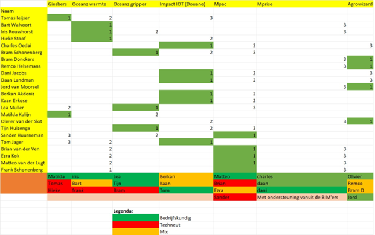 [Op 6 september hadden we namelijk geluisterd naar de pitches van de verschillende opdrachtgevers. Vervolgens vragen gesteld en voorkeuren opgegeven in het Excel bestand in Teams. Ik had aangegevend at ik graag een praktische opdracht in een andere sector wil ontdekken. Vandaar mijn eerste keuze Giesbers, tweede keuze Oceanz en derde keuze IoT energie. De groepjes hebben we geprobeerd te maken in de pauze voor de workshop smart connection. De verdeling leek soepel te verlopen, maar na de workshop Smart Connection zijn er, zonder overleg, aanpassingen gedaan in het bestand. Hier was ik het niet mee eens, omdat ik nu niet meer ingedeeld was bij een van mijn drie keuzes en heb dan ook initiatief genomen door een opmerking te plaatsen dat ik het er niet mee eens was in het gedeelde bestand en een appje in de groepsapp.]Workshop 3, Okt 6, 2023
In de middag stond er een masterclass op het programma: 'master je brein'. Ilke Oner heeft ons vertelt over Neuropsychology en NLP (neuro linguïstisch programmeren), dus hoe ons brein werkt en hoe we dat in kunnen zetten om onze talenten tot uiting te laten komen. We hebben onder andere uitleg gekregen over het 5G-model. Hieruit kwam naar voren dat we onze gedachten en gevoelens moeten aanpassen i.p.v. eerst gedrag.
Wat ik heb geleerd in deze workshop is als volgt:
- Focus op jezelf
- Whether you think you can or you cannot you are always right
Daarnaast kregen we ook nog de opdracht om mensen op te schrijven die je inspireren en hebben we een oefening gedaan om een positiever gevoel te krijgen (zie foto hieronder).
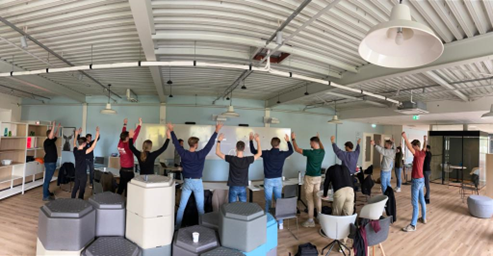Reflectie, Okt 24, 2023
Samen met Hieke en Tomas het plan van aanpak verder uitgebreid en de planning voor de komende weken ingevuld. Ik ga deze week de interviewvragen uitwerken voor alle partijen en alvast beginnen met deskresearch voor de verschillende digitale systemen die gehanteerd kunnen worden in de bouw. Alle drie gaan we donderdag nog reflecteren op onze doelstellingen.| Competentie | Toelichting |
|---|---|
| 1. Ik neem veel initiatief en ik toon betrokkenheid. | Ik probeer time management toe te passen tijdens de vergaderingen. Ik ben altijd aanwezig en stuur een appje om concrete afspraken met mijn groep te maken. Daarnaast toon ik aan dat ik mij wil inzetten voor het project door taken naar mijzelf toe te trekken. |
| 2. Ik doe eerst onderzoek voordat ik mijn mening geef of adviseer. | Voor de verschillende digitale systemen voor de bouw voer ik deskresearch uit. |
| 3. Ik kies ambitieuze leerdoelen en verken disciplines buiten mijn eigen vakgebied. | Alles wat ik in deze minor doe, nu met name voor Giesbers, zijn disciplines buiten mijn eigen vakgebied. |
| 4. Ik ben bewust bezig met mijn persoonlijke groei. | Deze week gereflecteerd en aldoor bewust van en bezig met mijn persoonlijk leerdoel (zie hieronder). |
| 5. Ik gebruik feedback (geven & vragen) en zelfreflectie om te leren. | Aan Nigel en Dries feedback gevraagd over het plan van aanpak en aan Tomas en Hieke of zij het ermee eens zijn bijvoorbeeld of nog aanvullingen hebben. |
| 6. Ik help actief anderen groeien. | Ik help Hieke en Tomas met analytisch onderzoek uitvoeren en niet te snel conclusies te trekken. |
Workshop 4, Nov 15, 2023
Reflectie op school, met feedback van groepsgenoten. Hieke was niet aanwezig, dus ik heb later de feedback aan haar gevraagd (gekregen op 21 december) en hieronder toegevoegd.
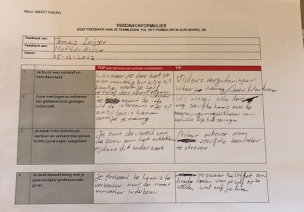 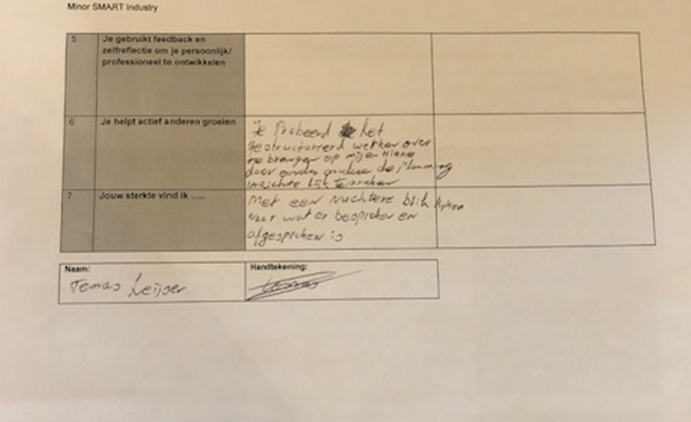 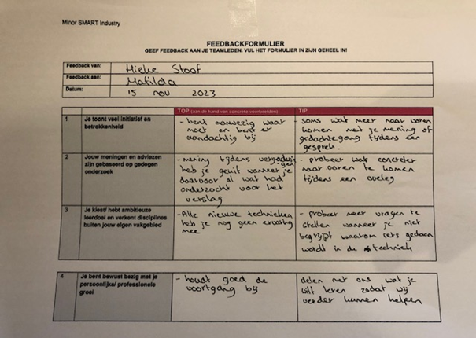 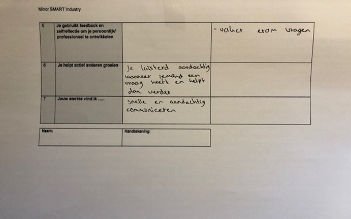Daarnaast kregen we ook te horen wat er op de website moet komen te staan en ben ik thuis na de workshop zelfstandig aan de slag gegaan met de website en heb ik alvast gewerkt aan het werkend krijgen van mijn smartwatersysteem (zie video hieronder).